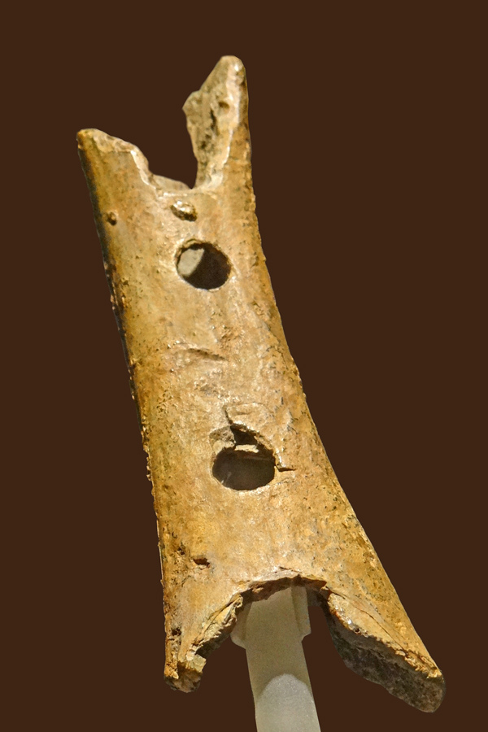
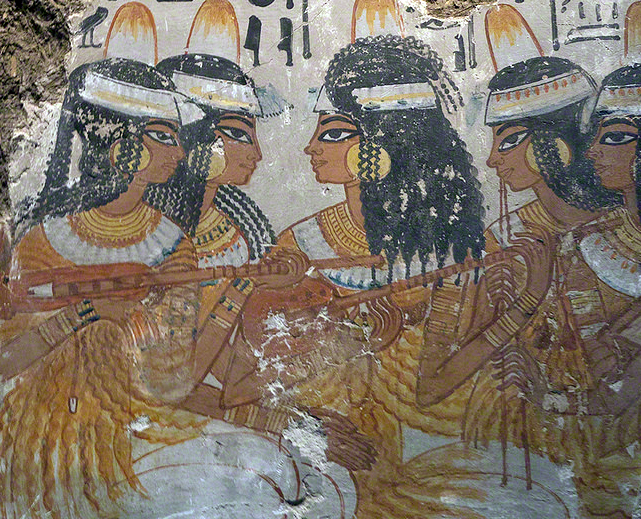
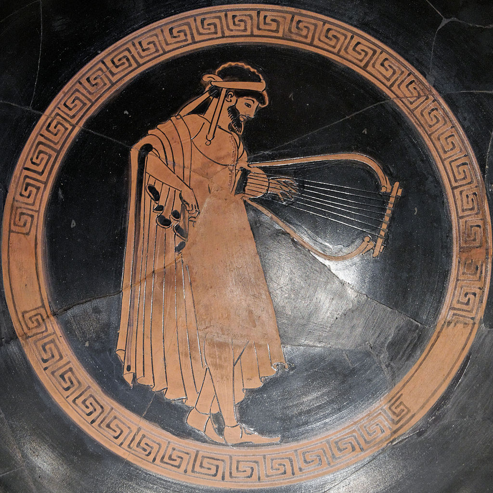
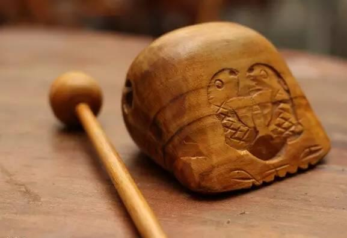
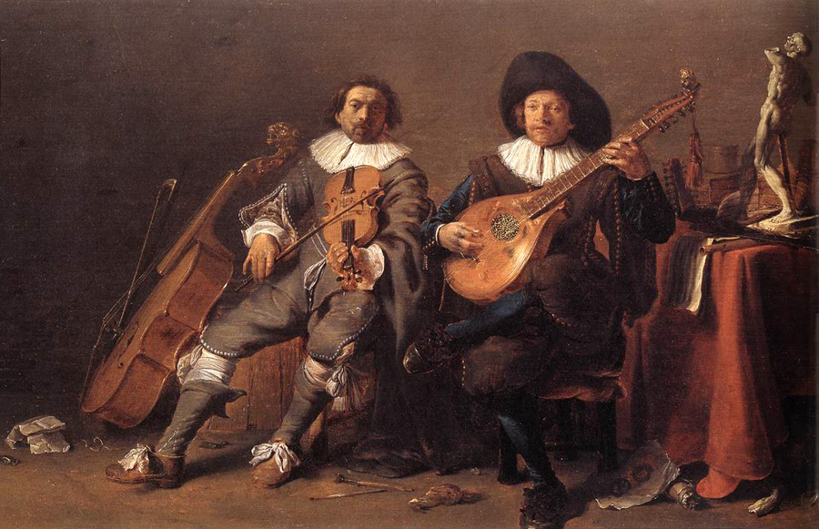
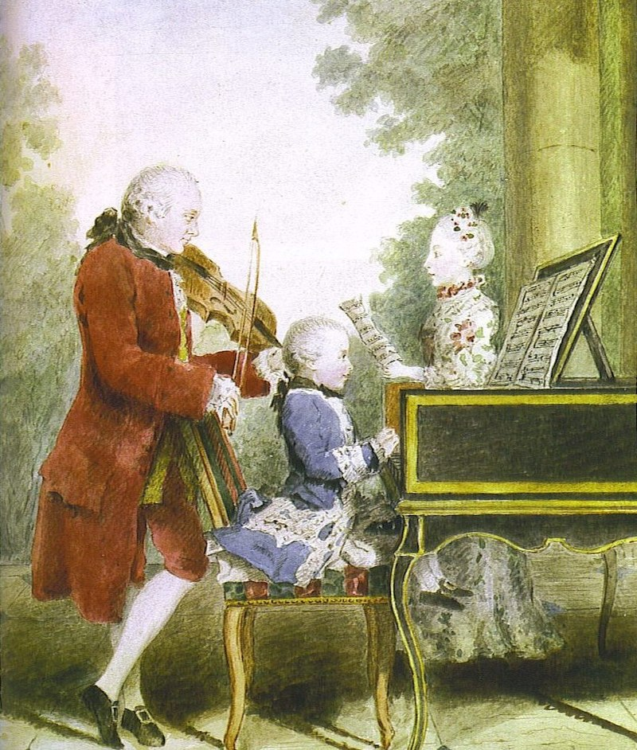

Tech: Now and Then

3 May 2021

A showcase of a bunch of old violins, which show how the instrument evolved over time.
Musical instruments are some of the most fantastical devices we've made as humans. We created things that can make all sorts of different sounds that can be played a certain way to create something truly beautiful. They can even be played together for better (or worse) sounding symphonies. But, where did all of this begin? And how did it all evolve to the instruments that we know today? Well, that question would bring us all the way to the Neanderthals with the first (possibly) known musical instrument.
An image of the Divje Babe flute, a "flute" carved from bone that produces a shrill sound when blown through.
The oldest thought musical instrument is the Divje Babe flute (made in around 65,000 - 41,000 BCE), which is a supposed musical instrument that produces a loud sound if someone blows through it. The reason why this "instrument" is debated is that it's not really known if it really was an instrument or some other tool. The oldest confirmed musical instrument would be mammoth and swan bone flutes from 35,000 - 28,000 BCE that were found in the Swabian Alps. Most instruments made by Neanderthals were extremely basic in function, as most were rattles or drums that were made out of very easy-to-gather material.

The Queen's Lyre, a regal instrument given to the queen of Sumeria due to its difficult craftsmanship.
New instruments popped up in Mesopotamia in the 2800-2500's BCE. The main instruments that seemed to be used there were clubs, clappers, sistra (rod with hoops), bells, cymbals, and rattles. Most of these instruments are lost to time, which means that most archaeologists only have the clay tablets that the people wrote on in cuneiform. The instruments were also not given names back then, so chronicling them is extremely difficult. The few illustrations that do exist are mainly of ceremonial instruments like harps and lyres, which are seen as holy instruments that call upon the gods. They were also given to high-ranking officials only.
An ancient Egyptian mural depicting several lute players.
Musical instruments in Egypt during these times are very similar to Mesopotamian instruments, hinting at some sort of trade route or other way of communication between the civilizations. Although, all contact appeared to be drowned out due to both countries going into violent war-like states from 2700-1500 BCE. Once Egyptians conquered South Africa, everything seemed to relax and the two civilizations got back to conversations, resulting in the lyre being passed to them.
Instruments in places like Israel began to be known around 2000-1000 BCE, but many instruments have not been seen due to their lack of illustrations. Most scholars have to rely upon the Bible's and Talmud's (law/religion book) description of instruments to attempt to piece together what they had. The most known instruments from those times seemed to be the ugab (pipes), kinnor (lyre), tof (frame drum), pa'amon (small bells), and hasosra (pre-trumpet).
An artist's rendition of a Greek man playing the lyre on a piece of pottery.
Most instruments in Greece and Rome were imported from other cultures during their existence (1200-600 BCE), meaning that none new were invented. Although, they did use a lot of those instruments, as many poems and epics depicted the use of them, along with many pieces of art. The main instruments used were lyres, aulos (reeds), syrnixes (flutes), tibias (flutes), lutes, harps, pipes/organs, and clappers. Lyres were mostly used, once again, as a holy instrument to communicate and give praise to the gods.
A wooden fish instrument sits next to a wooden rod similar to a drumstick, the main way to play it.
China, unlike Greece and Rome, had many unique inventions that inspired many future instruments. They also heavily encouraged the usage of instruments as a way to bring the communities together, which made many want to try them out and led to a rich culture of instruments. Some main instruments used during the Shang dynasty were bells, chimes, drums, and flutes, which many flutes have been excavated and preserved by archeologists. In the Zhou dynasty, clappers, troughs, wooden fish, flutes, pan-pipes, and mouth organs appeared. They also made one of the first orchestras in 384 CE after conquering Turkey and getting many influential instruments from places around it. Many of these instruments went on to influence other cultures.
During the Middle Ages, various cultures advanced in instrument creation and ideals. Some new instruments that became popular were cymbals, advanced trumpets, oboes, pianos, flutes, drums, and lutes. Balinese and Javanese music began to use xylophones, metallophones, and gongs. Islamic culture brought together the use for frame, cylindrical, and kettle drums that accentuated their music. European music became more sophisticated through the usage of urghuns (organs), shilyani (harps/lyres), salandj (bagpipes), and lyra (predecessor of the violin).
A painting featuring two men playing instruments together to combine their music into a beautiful harmony.
Once the Renaissance period hit in the 1400's CE, many people began to develop more complex and interesting instruments due to advances in technology and craftsmanship, along with the interest in more dynamic sounds becoming stronger. Instruments also started to be used more as solo instruments where people would play by themselves, just enjoying the music they made and possibly spreading it to others nearby. Musical instruments like the violin got all their classical shapes that still last to this day, showing how their designs were truly special. Two major books that help chronicle the instruments at the time are Arnolt Schlick's "Spiegel der Orgelmacher und Organisten" (Mirror of Organ Makers and Organ Players) and "Syntagma Musicum" by Micheal Praetorius.
The Baroque period began in 1700 CE, with many composers ditching instruments with low ranges and dynamics in favor of more emotional instruments that went well with the human voice. Instruments such as the violin, viola, baryton (similar to a violin), and lute dominated the scene as the main instruments to use due to their ease of range and playing. Lutes, however, eventually faded out in the 1750's in the favor of the guitar. After a while, wind instruments such as the flute, oboe, and bassoon became to be used again due to the monotony of only hearing string music for practically any piece of music. The French horn was also created during the 1700's, as it was originally based off of the horn that was going to be used for an orchestra, so it was sized up and became a decently popular instrument to play.
A painting of a young Mozart and his father playing instruments together.
After the Baroque period, the Classical/Romantic period took over for about 150 years (1750-1900). Many new instruments capable of higher volume were introduced. Orchestras rose in popularity, and many instrument designs had to change to accommodate an orchestra playing with them. Two major instruments that were attempted to be adjusted were the flute and violin, with many of their designs failing. New instruments that became mainstays in orchestras were the clarinet, saxophone, and tuba. Instruments like the clarinet and violin grew more "families", or similar instruments that could be used for different sounds in musical pieces.
Finally, the 20th century saw the largest musical expansion that has been known. The evolution of most traditional instruments had widely faded, as most instruments invented during the 18th-19th century saw no real changes. But, the ease of access to electricity made many instruments able to create all new never-before-seen sounds that wowed and shocked audiences. Some electric instruments would be Hammond organs and electric guitars. The latter half of the 19th century saw the evolution of synthesizers, which used microchips and digital/analog circuits to produce sound. While these synthesizers used to fill rooms, now they can be embedded on any modern electronic device. The sampler also allowed the recording of a sound to be played around with on the fly, being heavily used in hip-hop music. Finally, the introduction of MIDI (Musical Instrument Digital Interface) majorly revolutionized the syncing of electronic instruments, which is still used heavily today to keep track of things much more difficult than before. Modern computers and microchips are now mainstays of the music industry that won't go away until something new is invented, and who knows how long that'll take!